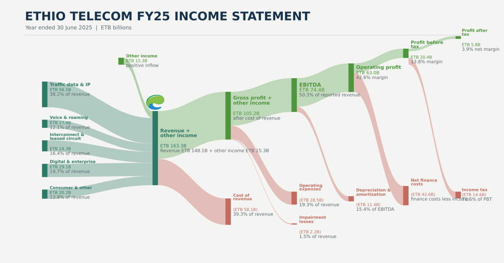

Data visualization · 2026
How Ethio telecom made money in FY25
A Sankey view of Ethio telecom’s income statement for the year ended 30 June 2025.
A Sankey view of Ethio telecom’s income statement for the year ended 30 June 2025.
The Sankey follows Ethio telecom’s FY25 income statement from revenue sources through operating costs, finance costs, and tax to profit after tax. It is designed to make the relative scale of each flow easier to see than in a conventional statement.

Reported revenue totals ETB 148.1B, led by traffic data and IP at ETB 56.5B, followed by digital and enterprise at ETB 29.1B, interconnect and leased circuit at ETB 24.3B, consumer and other at ETB 20.2B, and voice and roaming at ETB 17.9B. Adding ETB 15.3B of other income brings the total inflow to ETB 163.3B.
After ETB 58.1B of cost of revenue, the business generates ETB 105.2B of gross profit and ETB 74.4B of EBITDA. Operating expenses, impairment losses, and depreciation reduce this to ETB 20.4B before tax. Finance costs are the largest downstream outflow at ETB 42.6B, while income tax is ETB 14.6B. The statement ends at ETB 5.8B of profit after tax.
The key visual takeaway is the distance between operating strength and bottom-line profit: a 50.3% EBITDA margin on reported revenue becomes a 3.9% net margin after finance costs and tax.